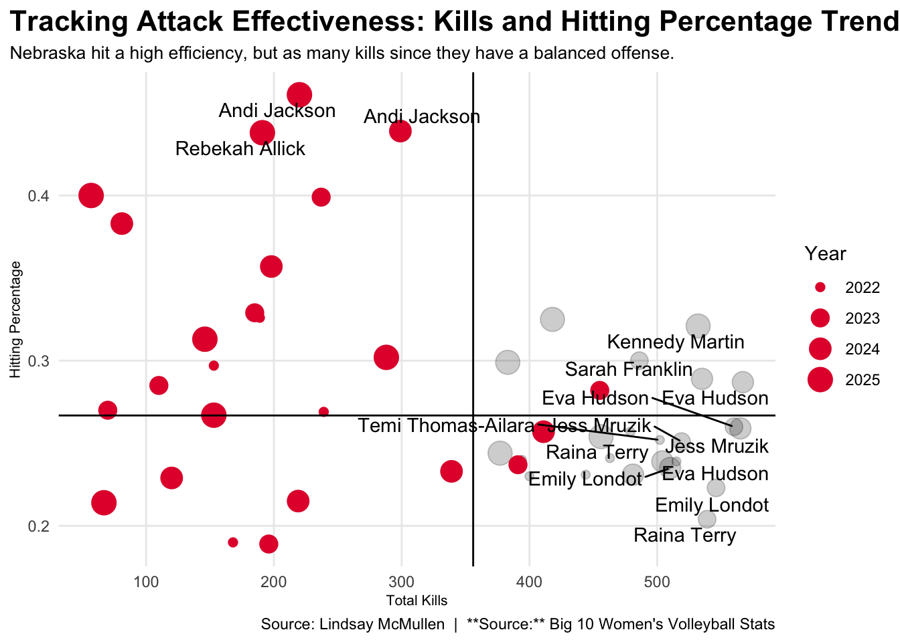
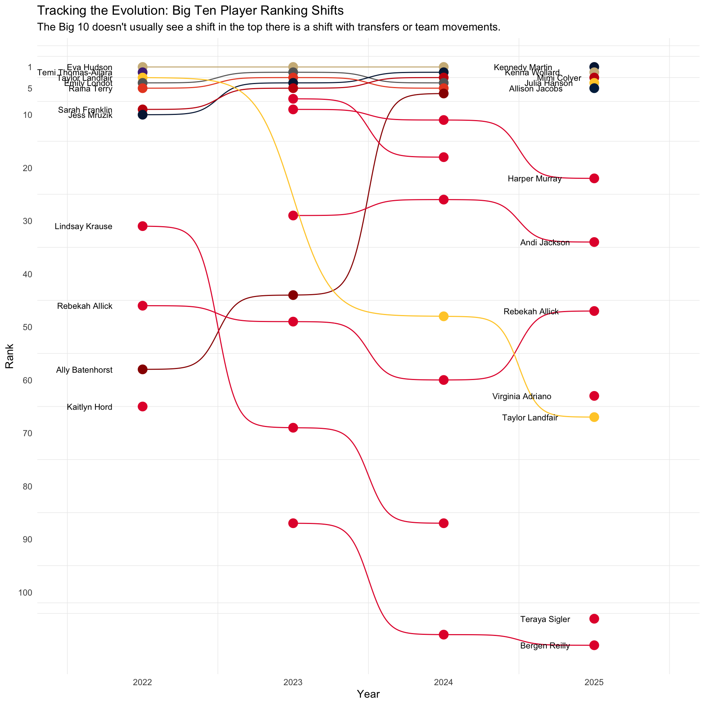

Who is statistically the best player in the Big 10?
women's volleyball
ncaa
players
Author
Lindsay McMullen
Published
December 9, 2025
The Big Ten conference is a true powerhouse in college volleyball, a tradition reflected in its consistent production of Olympians and star professional athletes, with a majority of the recent US Women’s Olympic team roster being Big Ten alumni This history fuels one of the biggest competitions: the race for the Big Ten Player of the Year award. While fan debates and announcer predictions happen before, during, and after the season. The decision ultimately rests on a vote by the conference’s head coaches, who weigh multiple critical factors. These factors include a player’s dominant individual statistics (such as kills per set, hitting percentage, or assists/digs per set), their overall impact on the team’s success.
Who is the best player in the Big 10?
Code
library(tidyverse)library(gt)year <-read_csv("playeroftheyear.csv")year |>gt() |>cols_label(Sets ="Sets Played",KPS ="Kills per set",PCT ="Hitting Percentage",APS ="Assists per set",BLKPS ="Blocks per set",DPS ="Digs per set" ) |>tab_header(title ="Big 10 Players Claim Player of the Year Awards",subtitle ="Conference standouts earn top honors after standout seasons across the Big Ten" ) |>tab_style(style =cell_text(color ="black", weight ="bold", align ="left"),locations =cells_title("title") ) |>tab_style(style =cell_text(color ="black", align ="left"),locations =cells_title("subtitle") ) |>tab_source_note(source_note =md("**By:** Lindsay McMullen | **Source:** Big 10 Women's Volleyball Stats") ) |>tab_style(locations =cells_column_labels(columns =everything()),style =list(cell_borders(sides ="bottom", weight =px(3)),cell_text(weight ="bold", size =16) ) ) |>opt_row_striping() |>opt_table_lines("none") |>tab_style(style =list(cell_fill(color ="#e41c38"),cell_text(color ="white") ),locations =cells_body(rows = Team =="Nebraska") )
Big 10 Players Claim Player of the Year Awards
Conference standouts earn top honors after standout seasons across the Big Ten
Name
Position
Team
Year
Sets Played
Kills per set
Hitting Percentage
Assists per set
Blocks per set
Digs per set
Bergen Reilly
Setter
Nebraska
2025
91
0.71
0.400
10.31
0.65
2.73
Sarah Franklin
Outside Hitter
Wisconsin
2024
120
4.46
0.289
0.32
0.49
2.28
Sarah Franklin
Outside Hitter
Wisconsin
2023
117
4.15
0.300
0.13
0.53
1.93
Taylor Landfair
Outside Hitter
Minnesota
2022
110
4.35
0.257
0.25
0.65
1.63
By: Lindsay McMullen | Source: Big 10 Women’s Volleyball Stats
Bergen Reilly’s was selected as the Big Ten Player of the Year, alongside her Setter of the Year honors. Outside Hitters (OH) have traditionally dominated the award due to their high visibility in kills and hitting percentages and offensive power. Reilly’s win shows more than her skills, but the type of all around player that she is offensively and defensively strong.
Code
library(tidyverse)library(ggrepel)rank <-read_csv("BIGplayers.csv")nebraska <- rank |>filter(Team =="Nebraska")ggplot() +geom_point(data = rank, aes(x = Kills, y = PCT, size = Year), color ="black", alpha = .2 ) +geom_point(data = nebraska, aes(x = Kills, y = PCT, size = Year), color ="#e41c38" ) +geom_vline(xintercept =355.9524) +geom_hline(yintercept =0.2668254) +geom_text_repel(data = rank |>filter(Kills >500| PCT >0.4),aes(x = Kills, y = PCT, label = Player),max.overlaps =Inf ) +scale_size(range =c(2, 6)) +scale_x_continuous(expand =expansion(mult =0.05)) +scale_y_continuous(expand =expansion(mult =0.05)) +labs(x ="Total Kills", y ="Hitting Percentage", title ="Tracking Attack Effectiveness: Kills and Hitting Percentage Trends", subtitle ="Nebraska hit a high efficiency, but as many kills since they have a balanced offense.", caption ="Source: Lindsay McMullen | **Source:** Big 10 Women's Volleyball Stats" ) +theme_minimal() +theme(plot.title =element_text(size =16, face ="bold"),axis.title =element_text(size =8), plot.subtitle =element_text(size=10), panel.grid.minor =element_blank(),plot.title.position ="plot" )

The Huskers are known for running a well balanced offense, which is why most of the athletes don’t have over 300 kills but a high hitting percentage. Since athletes like Kennedy Martin and Sarah Franklin. The players will more kills typically have a lower hitting percentage because there is more room for error.
Code
ggplot(rank, aes(x =reorder(Player, Dig), y = Dig, fill =as.factor(Year))) +geom_bar(stat ="identity") +coord_flip() +labs(title ="Digs by Players Across Years",subtitle ="Most athletes considered the best in the sport of volleyball has to be a good all around player \n offensively and defensively",x ="Player",y ="Total Digs",fill ="Year" ) +scale_fill_manual(values =c("2022"="black","2023"="red","2024"="blue","2025"="darkgreen" ) ) +labs(caption="Source: Lindsay McMullen | **Source:** Big 10 Women's Volleyball Stats" ) +theme_minimal() +theme(plot.title =element_text(size =20, face ="bold"),axis.title =element_text(size =8), plot.subtitle =element_text(size=10), panel.grid.minor =element_blank(),plot.title.position ="plot" )
To be considered for the Big Ten Player of the Year (POY) award, an athlete must be an all-around threat, demonstrating high performance across both offensive and defensive rotations. This preference for the six-rotation player is evident in recent winners. In 2022, Taylor Landfair at Minnesota was known for her defensive impact while remaining on the court for every rally. This year, Bergen Reilly fit the profile perfectly by leading her team in assists while also standing out as one of the conference’s top defensive players.
Code
library(ggbump)ggplot() +geom_bump(data=rank, aes(x=Year, y=Rank, color=Player)) +geom_point(data=rank, aes(x=Year, y=Rank, color=Player), size =4) +geom_text(data = rank |>filter(Year ==min(Year)),aes(x = Year - .2, y = Rank, label = Player),size =3, hjust =1) +geom_line(linewidth =4) +scale_x_continuous(breaks =c(2022, 2023, 2024, 2025)) +scale_y_reverse(breaks =c(1, 5, 10,20,30,40,50,60,70,80,90,100)) +geom_text(data = rank |>filter(Year ==min(Year)),aes(x = Year - .5, y = Rank, label = Player),size =3, hjust =3) +geom_text(data = rank |>filter(Year ==max(Year)),aes(x = Year + .5, y = Rank, label = Player),size =3, hjust =3) +scale_color_manual(values =c("#00274c", "#990000", "#e41c38", "#e41c38", "#666666", "#ceb888", "#e41c38","#041E42", "#FFCC33", "#e41c38", "#ceb888", "#041E42", "#e41c38", "#e41c38","#c5050c", "#E84A27", "#e41c38", "#c5050c", "#FFCC33", "#4E2A84", "#e41c38","#e41c38" )) +labs(title ="Tracking the Evolution: Big Ten Player Ranking Shifts",subtitle ="The Big 10 doesn't usually see a shift at the top, but changes emerge with transfers or roster movement.",y ="Rank",x ="Year",caption ="Source: Lindsay McMullen | Big Ten Women's Volleyball Stats" ) +theme_minimal() +theme(legend.position ="none",panel.grid.major =element_blank(),plot.title =element_text(size =18, face ="bold"),plot.subtitle =element_text(size =10) )

The top five Big Ten athlete rankings typically remain the same, shifting only due to major roster changes such as graduation, transfers, or team reassignments. This stability makes the case of Eva Hudson; despite being the statistical leader in the Big Ten, she never won Player of the Year (POY) and then transferred to Kentucky, where she achieved the POY award Nebraska players, whose balanced style of play often balanced statistics, rarely place in the top five. Over the last four years, Harper Murray and Merritt Beason have been the only Huskers to break into the top ten rankings.